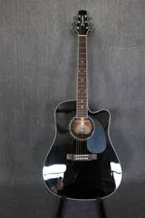

guitar
The guitar is a stringed musical instrument that is usually fretted (with some exceptions) and typically has six or twelve strings. It is usually held flat against the player's body and played by strumming or plucking the strings with the dominant hand, while simultaneously pressing selected strings against frets with the fingers of the opposite hand. A guitar pick may also be used to strike the strings. The sound of the guitar is projected either acoustically, by means of a resonant hollow chamber on the guitar, or amplified by an electronic pickup and an amplifier.
The guitar is classified as a chordophone, meaning the sound is produced by a vibrating string stretched between two fixed points. Historically, a guitar was constructed from wood, with its strings made of catgut. Steel guitar strings were introduced near the end of the nineteenth century in the United States,[1] but nylon and steel strings became mainstream only following World War II.[1] The guitar's ancestors include the gittern, the vihuela, the four-course Renaissance guitar, and the five-course baroque guitar, all of which contributed to the development of the modern six-string instrument.
There are three main types of modern guitar: the classical guitar (Spanish guitar); the steel-string acoustic guitar or electric guitar; and the Hawaiian guitar (played across the player's lap). Traditional acoustic guitars include the flat top guitar (typically with a large sound hole) or the archtop guitar, which is sometimes called a "jazz guitar". The tone of an acoustic guitar is produced by the strings' vibration, amplified by the hollow body of the guitar, which acts as a resonating chamber. The classical Spanish guitar is often played as a solo instrument using a comprehensive fingerstyle technique where each string is plucked individually by the player's fingers, as opposed to being strummed. The term "finger-picking" can also refer to a specific tradition of folk, blues, bluegrass, and country guitar playing in the United States.

The modern word guitar and its antecedents have been applied to a wide variety of chordophones since classical times, sometimes causing confusion. The English word guitar, the German Gitarre, and the French guitare were all adopted from the Spanish guitarra, which comes from the Andalusian Arabic قيثارة (qīthārah)[6] and the Latin cithara, which in turn came from the Ancient Greek κιθάρα[7] which is of uncertain ultimate origin. Kithara appears in the Bible four times (1 Cor. 14:7, Rev. 5:8, 14:2, and 15:2), and is usually translated into English as harp.
The origins of the modern guitar are not known.[8] Before the development of the electric guitar and the use of synthetic materials, a guitar was defined as being an instrument having "a long, fretted neck, flat wooden soundboard, ribs, and a flat back, most often with incurved sides."[9] The term is used to refer to a number of chordophones that were developed and used across Europe, beginning in the 12th century and, later, in the Americas.[10] A 3,300-year-old stone carving of a Hittite bard playing a stringed instrument is the oldest iconographic representation of a chordophone, and clay plaques from Babylonia show people playing a lute-like instrument which is similar to the guitar.
Several scholars cite varying influences as antecedents to the modern guitar. Although the development of the earliest "guitar" is lost to the history of medieval Spain, two instruments are commonly claimed as influential predecessors: the four-string oud and its precursor, the European lute; the former was brought to Iberia by the Moors in the 8th century. It has often been assumed that the guitar is a development of the lute, or of the ancient Greek kithara. However, many scholars consider the lute an offshoot or separate line of development which did not influence the evolution of the guitar in any significant way.[9][11][12]
At least two instruments called "guitars" were in use in Spain by 1200: the guitarra latina (Latin guitar) and the so-called guitarra morisca (Moorish guitar). The guitarra morisca had a rounded back, a wide fingerboard, and several sound holes. The guitarra Latina had a single sound hole and a narrower neck. By the 14th century the qualifiers "moresca" or "morisca" and "latina" had been dropped, and these two chordophones were simply referred to as guitars.[13]
The Spanish vihuela, called in Italian the viola da mano, a guitar-like instrument of the 15th and 16th centuries, is widely considered to have been the single most important influence in the development of the baroque guitar. It had six courses (usually), lute-like tuning in fourths and a guitar-like body, although early representations reveal an instrument with a sharply cut waist. It was also larger than the contemporary four-course guitars. By the 16th century, the vihuela's construction had more in common with the modern guitar, with its curved one-piece ribs, than with the viols, and more like a larger version of the contemporary four-course guitars. The vihuela enjoyed only a relatively short period of popularity in Spain and Italy during an era dominated elsewhere in Europe by the lute; the last surviving published music for the instrument appeared in 1576.[14]
Meanwhile, the five-course baroque guitar, which was documented in Spain from the middle of the 16th century, enjoyed popularity, especially in Spain, Italy and France from the late 16th century to the mid-18th century.[A][B] In Portugal, the word viola referred to the guitar, as guitarra meant the "Portuguese guitar", a variety of cittern.